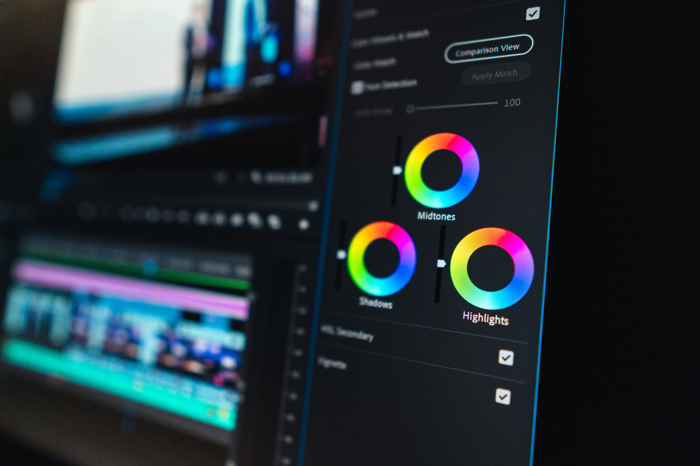

About UI/UX Design
User interface design (UI) or user interface engineering is the design of user interfaces for machines and software, such as computers,
About VFX
Visual effects (abbreviated VFX) is the process by which imagery is created or manipulated outside the context of a live action shot in filmmaking.
About Video Editing
Video editing is the manipulation and arrangement of video shots. Video editing is used to structure and present all video information,

Video Editing Software: Adobe Premier Pro